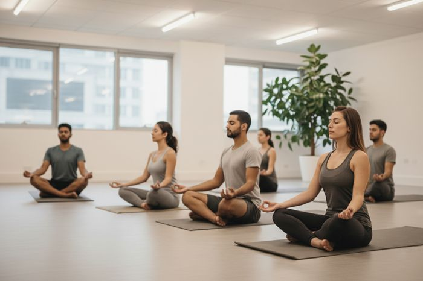

Se reconnecter à soi, cultiver l’écoute et l’équilibre émotionnel
Gagner en souplesse, améliorer la posture et libérer les tensions
Cultiver la pleine conscience et la clarté mentale par la méditation
Des séances individuelles ou en groupe, personnalisables et évolutives pour harmoniser corps, cœur et conscience.
En savoir plusNous proposons des solutions adaptées à tous, que vous soyez un particulier ou une entreprise

Les séances individuelles ou en groupe s’adressent à toute personne souhaitant mieux gérer son stress, ses émotions ou renforcer son bien-être au quotidien. Elles combinent des exercices de respiration, de détente musculaire et de visualisation positive pour rétablir l’équilibre entre le corps et l’esprit.
Les séances individuelles se déroulent en studio ou à domicile.
Découvrir
Les séances Trinergy en entreprise favorisent la réduction du stress et la prévention des risques psychosociaux, améliorant ainsi la qualité de vie au travail. Elles renforcent la concentration, la créativité et la motivation des équipes. Enfin, elles soutiennent la cohésion et la communication interne, contribuant à une meilleure performance collective.
Les séances se déroulent en studio ou dans vos locaux.
Découvrir« En tant que Manager IT, toujours assis devant mon ordinateur avec une mauvaise posture, je sens que je perds en mobilité, mais grâce aux séances de Trinergy faites sur mesure, je me sens mieux dans mon corps, je bouge mieux, et ça me donne une sensation de bonheur. Je recommande vivement pour toute personne qui travaille toujours devant son PC, vous allez vous sentir renaître ! »
Abbes | Manager IT« Le jour même, méga détente, j’ai dormi à 21h. Ce que j’ai apprécié dans la séance, c’est que pour chaque mouvement tu nous as dit les détails : où mettre chaque membre, les muscles qui travaillent... Et comme on a principalement travaillé la partie haute du corps, j’ai l’impression que mon thorax s’est ouvert et que je respire mieux ! »
Meriem | enseignante universitaire« Ce que j’ai préféré le plus dans les séances de Trinergy c’est qu'on est à votre écoute, étant donné que je me sentais rigide, le parcours a été adapté, du coup c’est rassurant et on se sent très bien juste après la séance. Après la séance, j’ai gagné en mobilité et je me sentais bien dans mon corps. »
Sarra | Team managerInvestissez dans votre bien-être dès aujourd'hui
et récoltez l’harmonie du corps, du cœur et de l’esprit.